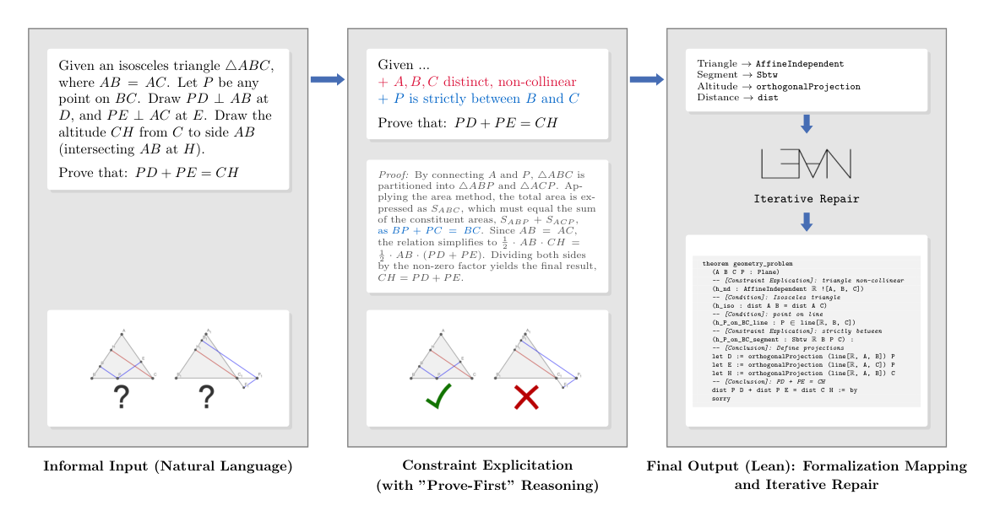

Autoformalizes natural-language geometry problems into Lean 4 statements using native Mathlib Euclidean space constructs, producing large datasets for prover training.
Abstract
Recent formal reasoning systems have reached IMO-level performance, yet they leave a fragmented landscape: algebra and number theory are handled in Lean, while geometry still relies on domain-specific languages with limited formal guarantees. This split increases the trusted computing base and hinders unified model development. Existing geometry-in-Lean efforts (LeanEuclid, LeanGeo) introduce custom axiom systems incompatible with standard Mathlib, and their small scale ($<$ 1,100 problems) limits large-scale training. Native Mathlib autoformalization of geometry, however, poses distinct challenges: implicit diagrammatic assumptions (e.g., topological configuration and non-degeneracy) must be made explicit rather than deferred to external solvers, and models must adapt to Mathlib's small, rapidly evolving geometry infrastructure. We present Euclean, a four-stage framework - constraint explication, configuration anchoring, formalization mapping, and iterative repair - for automatically formalizing geometry in native Mathlib. We construct OMNI-Geometry (768 competition problems) and Numina-Geometry (177,597 problems), the largest geometry formalization dataset in Lean. Human evaluation shows 48.89% TOP1 and 73.33% TOP5 accuracy. Training Goedel v2 on our formalizations improves proof success from 13.6% to 15.1%, validating dataset quality for unified neural theorem proving. Code and datasets: https://github.com/tlb-22/Euclean.
Problem
Formal reasoning systems handle algebra and number theory in Lean, but geometry still relies on domain-specific languages with weak formal guarantees. Existing geometry-in-Lean efforts use custom axiom systems that are incompatible with Mathlib and contain fewer than 1,100 problems.
Approach
Euclean is a four-stage LLM pipeline (constraint explication, configuration anchoring, formalization mapping, iterative repair). It translates informal geometry problems into Lean 4 theorems over Mathlib's EuclideanSpace ℝ (Fin 2). It makes implicit diagrammatic assumptions explicit, such as non-degeneracy via AffineIndependent and ordering via Sbtw. DeepSeek-V3 is used as the generator, with 32 candidates per problem.

Figure 1 : Overview of the Euclean formalization pipeline. Left (Ambiguity in Input): The process begins with an informal natural language statement containing topological ambiguity—for instance, “Point P on BC ” could topologically imply a segment, ray, or line. The diagrams illustrate that while the left configuration is the intended solution, the right configuration (on the extension) is invali
Results
The pipeline produced OMNI-Geometry (768 competition problems, 98.5% retention) and Numina-Geometry (177,597 problems). Human evaluation gives 48.89% TOP1 and 73.33% TOP5 accuracy. Fine-tuning Goedel v2 on the formalizations raises pass@1 from 13.6% to 15.1%.
Model
Pass@1 (%)
Goedel v2 (base)
13.6
base + SFT (round 1 passed)
15.1
base + DPO (pass/fail pairs)
15.0
Downstream prover training (Pass@1)
Configuration
Compiling
Basic prompting
125 (13.0%)
+ concepts formalization mapping
254 (26.5%)
+ iterative code repair
465 (48.4%)
+ constraints formalization mapping
500 (52.1%)
+ configuration anchoring
480 (50.0%)
Ablation: compiling formalizations out of 960 candidates